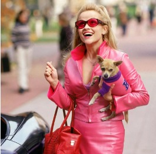
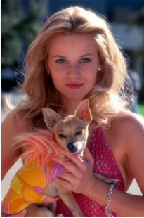

Legalmente Rubia
Elle Woods es una rubia muy popular, buena estudiante, presidenta de su hermandad y Miss Junio en el calendario de la universidad. Disfruta de una vida maravillosa pero todo se derrumba cuando su novio rompe con ella por ser demasiado rubia y poco formal para su futura carrera en el mundo de la política. Decidida a borrar esta imagen de ella, Elle se matricula en la Facultad de Derecho de Harvard y se enfrenta a un reto mayor de lo que esperaba.
 
Actores principales
Reese Witherspoon:Elle Woods
Luke Wilson:Emmett Richmond
Selma Blair:Vivian Kensington
Victor Garber:Profesor Callahan
Actores secundarios
Jennifer Coolidge:Paulette Bonafon
Matt Davis:Warner Huntingt
Ali Larter:Brooke Taylor
Meredith Scott Lynn:Enid
Oz Perkins:David Kidney
Donaji Velazquez Lucio 2IM5